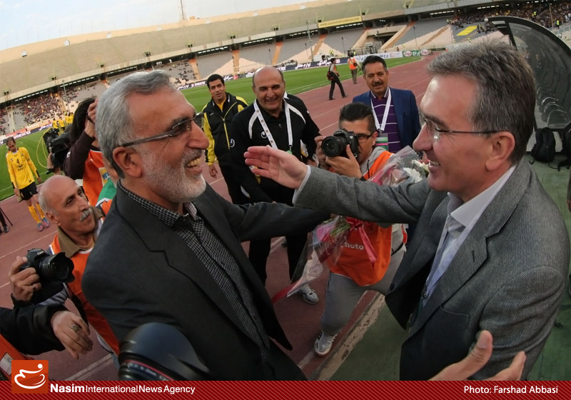

فرکی: هدایت تیم ملی به من پیشنهاد شد اما چون کیروش سرمربی بود، نپذیرفتم
سرویس ورزشی «فردا»- سرمربی سپاهان ادعا میکند فعلا در مورد تمدید قرارداد با سپاهان فکر نمیکند، چون تمرکزش روی بازیهای باقیمانده تیمش است. هرچند به نظر میرسد با نتایجی که این تیم در چند هفته اخیر گرفته، به احتمال فراوان این پیشنهاد را به زودی دریافت خواهد کرد. حسین فرکی در گفتگوی تفصیلی با «نسیم» تایید میکندکه بعد از جامجهانی پیشنهاد هدایت تیم ملی را دریافت کرده اما چون در آن زمان هنوز کیروش سرمربی تیم ملی بوده این پیشنهاد را نپذیرفته است.